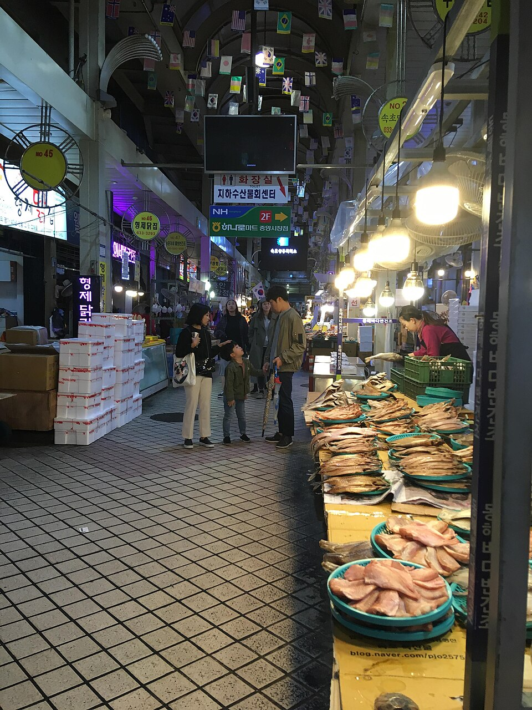
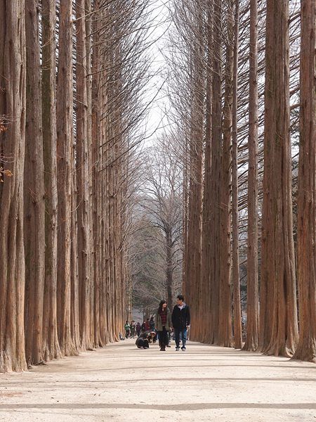
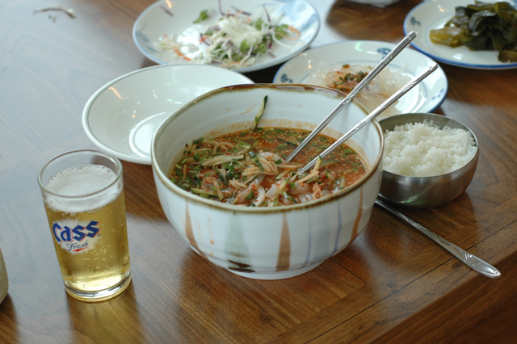
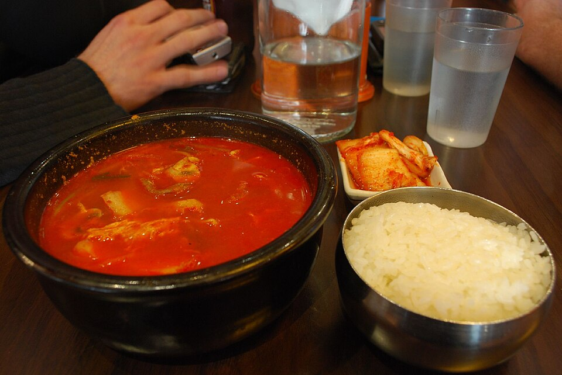

Gangwon en pantalla: comida y lugares desde el mercado de Sokcho hasta el dakgalbi de Chuncheon
Una guía de los lugares de Gangwon que han aparecido en vídeos de viaje y programas de la televisión coreana: el mercado de mariscos de Sokcho, el dakgalbi de Chuncheon con la isla Nami y restaurantes locales en Wonju, Cheorwon y Yanggu.
Gangwon: comer entre las montañas y el mar
Gangwon es el refugio natural de Corea, con la costa del mar del Este, el monte Seoraksan y la isla Nami. Muchos de sus platos llevan el nombre de un lugar: el dakgalbi de Chuncheon (pollo salteado picante), el cangrejo de las nieves y los fideos con pescado crudo de Sokcho, el tofu suave de Chodang en Gangneung y los fideos de trigo sarraceno makguksu. A continuación, los restaurantes y lugares que han salido en vídeos de viaje y programas de la televisión coreana, agrupados por zona.
Sokcho
Mercado Turístico y Pesquero de Sokcho

📍 Mercado Turístico y Pesquero de Sokcho · Naver Map · Google Maps
Un mercado donde se puede probar en una sola visita dakgangjeong (pollo frito crujiente y dulce), sundae de calamar (calamar relleno) y cangrejo de las nieves. Aparece en Gangwon-do Signature Dishes at Sokcho Traditional Market y en Sokcho Trip – Beach, Cafes, Central Market & Makgeolli Bread, que también recorre la playa, las cafeterías y el pan de makgeolli. El programa gastronómico coreano Heo Young-man's Baekban Gihaeng (episodio 159) mostró sus puestos de cangrejo de las nieves.
Chuncheon y la isla Nami

📍 Isla Nami · Naver Map · Google Maps
Chuncheon Myeongmul Dakgalbi
📍 Chuncheon Myeongmul Dakgalbi · Naver Map · Google Maps
Un restaurante de dakgalbi de camino a la isla Nami, una parada práctica para probar el plato típico de Chuncheon. Forma parte de la ruta de Chuncheon Dakgalbi & Nami Island y Seoul to Chuncheon Korea.
Isla Nami
Una isla conocida por sus caminos flanqueados de altas metasecuoyas. Puede verse en Chuncheon Dakgalbi & Nami Island, que combina la isla con una comida de dakgalbi.
Wonju
Gohyang Boribap
📍 Gohyang Boribap · Naver Map · Google Maps
Un restaurante que sirve un menú de ssambap (arroz con hojas para envolver) y panceta de cerdo. Apareció en el episodio 15 (Wonju) del programa de mercados de Baek Jong-won Nima Geu Sijangeul Gao, centrado en comer panceta envuelta en hojas acompañada de licor tradicional coreano.
Cheorwon
Seonghwan Sikdang

📍 Seonghwan Sikdang · Naver Map · Google Maps
Conocido por su mulhoe de calamar, una sopa fría de pescado crudo. El episodio 21 (Cheorwon) de Nima Geu Sijangeul Gao lo presentó con el título «¿Esto es mulhoe?», dando a entender que no es exactamente la versión que la mayoría espera.
Yanggu
Paroho Gukbap

📍 Paroho Gukbap · Naver Map · Google Maps
Un lugar de yukgaejang (sopa picante de ternera) y gukbap (sopa con arroz). El episodio 25 (Yanggu) de Nima Geu Sijangeul Gao lo mostró sirviendo yukgaejang en raciones del tamaño de una montaña.
Lugar para fotos
Parada de autobús de BTS
📍 Parada de autobús de BTS · Naver Map · Google Maps
Una parada de autobús conocida por ser escenario de fotos de un álbum de BTS, popular entre fans y viajeros para hacerse fotos de recuerdo. Para hacerse una idea de la costa del mar del Este, vale la pena ver el clip destacado de Welcome, First Time in Korea? en el que los visitantes contemplan el mar de Gangneung.
Cómo moverse
Gangwon es una región extensa, así que es más fácil planificar por zonas que intentar verlo todo en un solo viaje. Chuncheon Myeongmul Dakgalbi y la isla Nami encajan bien como excursión de un día, mientras que el Mercado Turístico y Pesquero de Sokcho funciona mejor dentro de un itinerario por la costa del mar del Este junto con la playa. Los restaurantes de Wonju, Cheorwon y Yanggu están repartidos por el interior de Gangwon, así que conviene tomarlos como parada para comer al pasar por cada localidad. Aquí no se indican horarios ni días de cierre, así que compruébalos antes de ir.
Lugares de los videos
- Mercado Turístico y Pesquero de Sokcho (속초관광수산시장) (속초관광수산시장) Dakgangjeong, sundae de calamar, cangrejo de las nieves Naver Map Google Maps
- Chuncheon Myeongmul Dakgalbi (춘천명물닭갈비) (춘천명물닭갈비) Dakgalbi cerca de la isla Nami Naver Map Google Maps
- Isla Nami (남이섬) (남이섬) Caminos flanqueados de árboles Naver Map Google Maps
- Gohyang Boribap (Wonju) (고향보리밥 (원주)) Menú de ssambap, panceta de cerdo Naver Map Google Maps
- Seonghwan Sikdang (Cheorwon) (성환식당 (철원)) Mulhoe de calamar Naver Map Google Maps
- Paroho Gukbap (Yanggu) (파로호국밥 (양구)) Yukgaejang, gukbap Naver Map Google Maps
- Parada de autobús de BTS (BTS 정류장) (BTS 정류장) Lugar de fotos de un álbum de BTS, popular para fotos de recuerdo Naver Map Google Maps
Ubicaciones y horarios pueden cambiar: consulta el mapa antes de ir.
Vídeos relacionados
 Gangwon-do Signature Dishes at Sokcho Traditional Market
Gangwon-do Signature Dishes at Sokcho Traditional Market
 Sokcho Trip – Beach, Cafes, Central Market & Makgeolli Bread
Sokcho Trip – Beach, Cafes, Central Market & Makgeolli Bread
 시장 가판대에서 대게 파는 속초 클래스 (159회)
시장 가판대에서 대게 파는 속초 클래스 (159회)
 Chuncheon Dakgalbi & Nami Island
Chuncheon Dakgalbi & Nami Island
 Seoul to Chuncheon Korea
Seoul to Chuncheon Korea
 [EP.15 원주] 삼겹살은 역시 쌈! 쌈밥과 우리 술
[EP.15 원주] 삼겹살은 역시 쌈! 쌈밥과 우리 술
 [EP.21 철원] 이게 물회예요? 철원 물회집
[EP.21 철원] 이게 물회예요? 철원 물회집
 [EP.25 양구] 산더미처럼 퍼주는 육개장집
[EP.25 양구] 산더미처럼 퍼주는 육개장집
 [하이라이트] 강릉 바다 보고 초흥분한 4남매
[하이라이트] 강릉 바다 보고 초흥분한 4남매
Más artículos
- Guía de comida de Jeollanam-do: cangrejo de Yeosu, mariscos y banchan de Mokpo y comida de Gwangju vista en programas coreanos de gastronomía
- Guía de comida callejera y mercados de Seúl: qué comer en el mercado Gwangjang, el mercado de pescado Noryangjin y más (según vídeos de tours gastronómicos)
- Guía de belleza coreana en Seúl: compras en Olive Young de Myeongdong y Seongsu, clínicas de piel y tratamientos de belleza
- Guía de comida coreana por región: qué comer en Seúl, Busan, Jeju, Mokpo, Daegu, Jeonju y más (basada en vídeos populares de mukbang y comida)
- Guía gastronómica de Jeonju: bibimbap, comida callejera de la aldea Hanok, mercado nocturno de Nambu y tteokgalbi de Gunsan (a partir de vídeos de viaje)
- Guía de comida de la isla de Jeju: cerdo negro, mariscos, el mercado nocturno Dongmun y los lugares para visitar